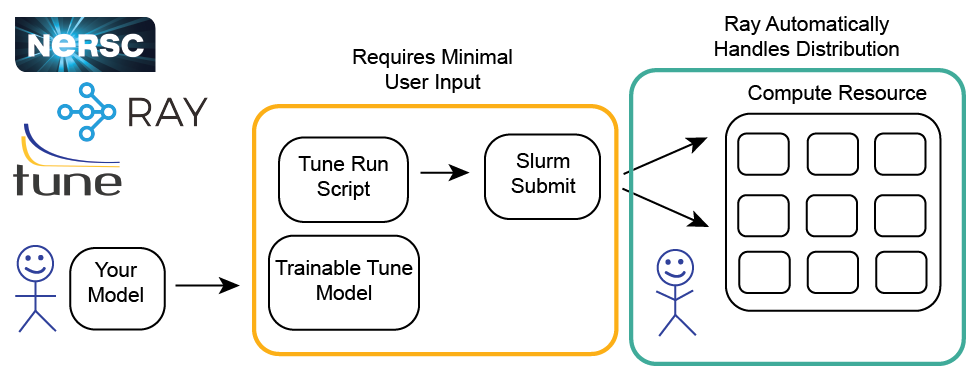
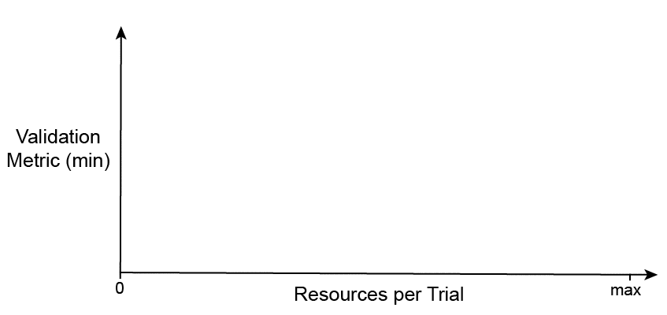
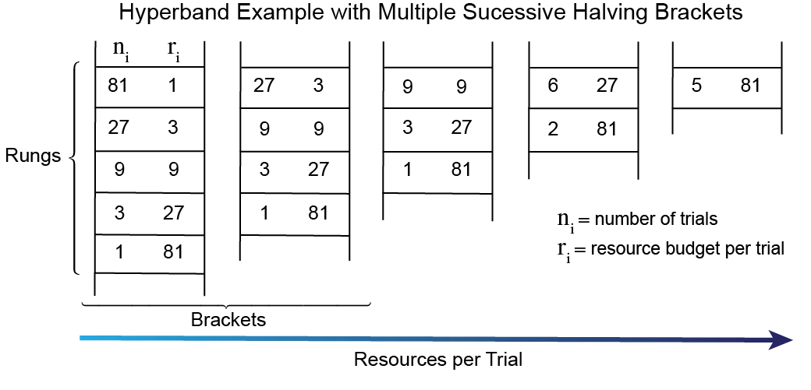
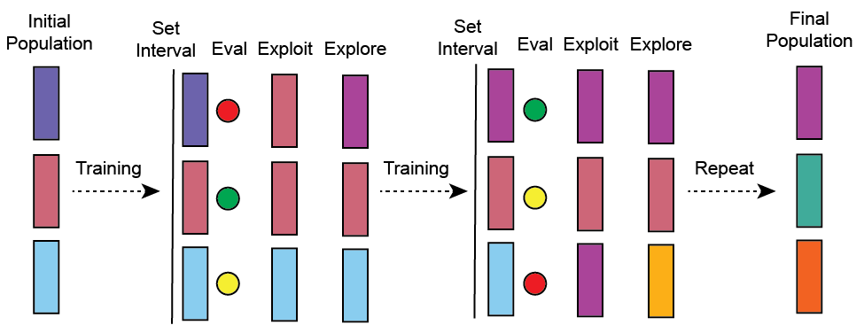
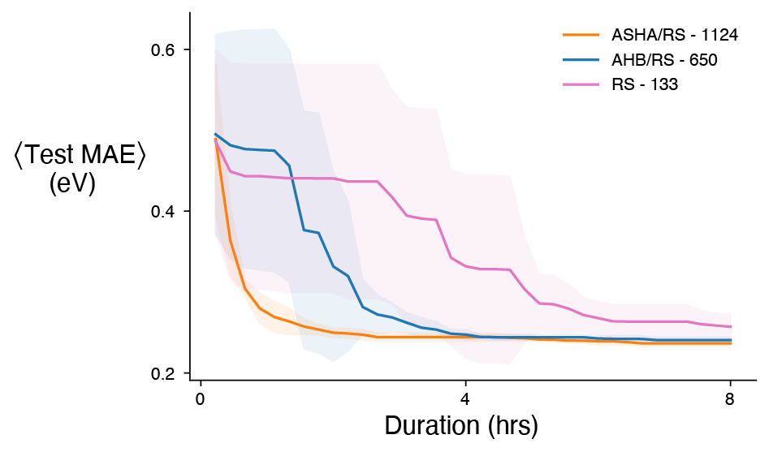
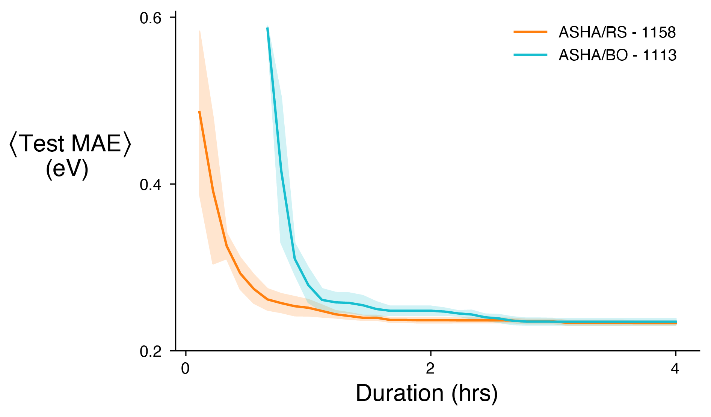
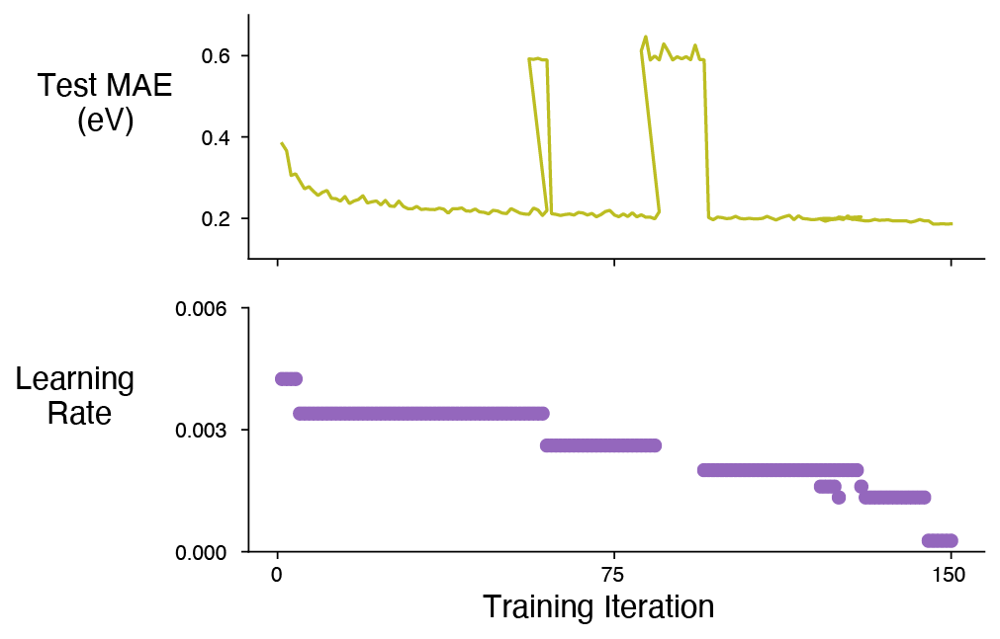
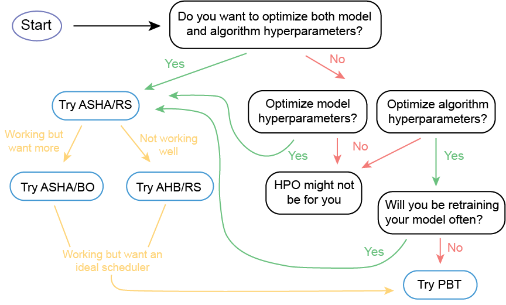

TL;DR: Running HPO at scale is important and Ray Tune makes that easy. When considering what HPO strategies to use for your project, start by choosing a scheduler — it can massively improve performance — with random search and build complexity as needed. When in doubt, ASHA is a good default scheduler.
Acknowledgements: I want to thank Zachary Ulissi (CMU), Mustafa Mustafa (NERSC), and Richard Liaw (Ray Tune) for making this work possible.
Table of Contents:
- Introduction
- Scalable HPO with Ray Tune
- How to Select an HPO Strategy
- Technical Tips
- Key Findings
- Key Takeaways
Introduction
Despite the tremendous success of machine learning (ML), modern algorithms still depend on a variety of free non-trainable hyperparameters. Ultimately, our ability to select quality hyperparameters governs the performance for a given model. In the past, and even some currently, hyperparameters were hand selected through trial and error. An entire field has been dedicated to improving this selection process; it is referred to as hyperparameter optimization (HPO). Inherently, HPO requires testing many different hyperparameter configurations and as a result can benefit tremendously from massively parallel resources like the Perlmutter system we are building at the National Energy Research Scientific Computing Center (NERSC). As we prepare for Perlmutter, we wanted to explore the multitude of HPO frameworks and strategies that exist on a model of interest. This article is a product of that exploration and is intended to provide an introduction to HPO methods and guidance on running HPO at scale based on my recent experiences and results.
Disclaimer; this article contains plenty of general non-software specific information about HPO, but there is a bias for free open source software that is applicable to our systems at NERSC.
Scalable HPO with Ray Tune
Being able to leverage the power of modern compute resources to run HPO at scale is important to efficiently search hyperparameter space — especially in the time of deep learning (DL) where the size of neural networks continues to increase. Luckily for all of us, the folks at Ray Tune have made scalable HPO easy. Below is a graphic of the general procedure to run Ray Tune at NERSC. Ray Tune is an open-source python library for distributed HPO built on Ray. Some highlights of Ray Tune: - Supports any ML framework - Internally handles job scheduling based on the resources available - Integrates with external optimization packages (e.g. Ax, Dragonfly, HyperOpt, SigOpt) - Implements state-of-the-art schedulers (e.g. ASHA, AHB, PBT)
I have enjoyed using Ray Tune, but if you choose a different HPO framework, no worries, there is still plenty of general information in this article.

How to Select an HPO strategy
Schedulers vs Search Algorithms
One of the first distinctions I want to point out about HPO strategies, is the difference between a scheduler and a search algorithm. The search algorithm governs how hyperparameter space is sampled and optimized (e.g. random search). From a practical standpoint, the search algorithm provides a mechanism to select hyperparameter configurations (i.e. trials) to test. A search algorithm is always necessary for HPO. Alternatively, schedulers improve the overall efficiency of the HPO by terminating unpromising trials early. For example, if I use random search, some of the trials are expected to perform poorly, so it would be nice to have the ability to terminate those trials early — saving valuable compute resources. This is what a scheduler does. A scheduler is not necessary for HPO but they massively improve performance. Below are brief descriptions and references for the schedulers and the search algorithms I tested.
Async Successive Halving Algorithm (ASHA — scheduler)
First, I want to define the successive halving algorithm (SHA), and instead of doing it myself, I really like the definition given in this paper — they also have pseudocode of the SHA and ASHA, if you are interested.
The idea behind SHA is simple: allocate a small budget to each configuration, evaluate all configurations and keep the top 1/η, increase the budget per configuration by a factor of η, and repeat until the maximum per-configuration budget of R is reached.

This graphic was adapted from an AutoML post.
The SHA does not parallelize well because all configurations need to be evaluated for a short time before the top 1/η can be selected. This creates a bottleneck at each rung (each successive halving is referred to as a rung). ASHA decouples trial promotion and rung completion, such that trials can be advanced to the next rung at any given time. If a trial cannot be promoted additional trials can be added to the base rung so more promotions are possible.
A major assumption of SHA and ASHA is that if a trial performs well over an initial short time interval it will perform well at longer time intervals. A classic example where this assumption can break down is tuning learning rates. Larger learning rates may outperform smaller learning rates at short times causing the smaller learning rate trials to be erroneously terminated. In practice, I am honestly not sure how much this matters.
Async Hyperband (AHB — scheduler)
Hyperband (HB) is a scheduler designed to mitigate the SHA’s bias towards initial performance. HB essentially loops over the SHA with a variety of halving rates — attempting to balance early termination with providing more resources per trial regardless of initial performance. Each loop of the SHA is considered a bracket, which can have a number of rungs. See the figure below. AHB is identical to HB except it loops over ASHA. The AHB and ASHA implementation used in Ray Tune is described in this paper.

Population Based Training (PBT — hybrid)
I call PBT a hybrid because it has aspects of both a scheduler and a search algorithm. It can also function as an HPO strategy and a trainer all-in-one. More on that in the Not all Hyperparameters Are the Same section. At a high-level, PBT is similar to a genetic algorithm. There is a population of workers, where each worker is assigned a random configuration of hyperparameters (trial) and at set intervals hyperparameter configurations are replaced by higher performing workers in the population (exploitation) and randomly perturbed (exploration). The user can set the balance of exploitation vs exploration. Here are a couple resources to learn more, blog and paper.

Random Search (RS — search algorithm)
When the hyperparameter space of interest is reasonably large, too large for a grid search, the default algorithm is random search. This is exactly as it sounds, hyperparameter configurations or trials are randomly selected from the search space. If given enough compute time RS works reasonably well.
Bayesian Optimization (BO — search algorithm)
BO provides an algorithmic approach to determining the optimal hyperparameters, instead of randomly searching. Because the objective function is unknown in HPO a black-box optimizer like BO is necessary. In BO a surrogate models the objective function and an acquisition function is used for sampling new points or new hyperparameter configurations in this case. Gaussian processes are typically used as the surrogate models in BO for HPO. Ideally, BO can converge towards the optimal hyperparameters much more efficiently than random search.
Time-to-Solution Study
To compare different HPO strategies I decided to keep it simple and focus on the average time-to-solution, which is a metric that is relatively straightforward to interpret. There are a couple caveats for my results:
- I did this work with a particular model and problem in mind (more on that below), so I do not expect these results to be completely general.
- There are many arbitrary choices that go into various HPO strategies that may alter the results.
Model details
The model I was interested in optimizing hyperparameters for is a graph neural network used in the field of catalysis to predict adsorption energies. Specific details can be found here.
Hyperparameters
There were six hyperparameters I examined and they are listed below:
- Learning Rate
- Batch Size
- Atom Embedding Size
- Number of Graph Convolution Layers
- Fully Connected Feature Size
- Number of Fully Connected Layers
Pro Tip: When making decisions about the size of the hyperparameter space you want to search — consider memory usage. When tuning network architecture and batch size I ran into memory issues on our 16GB GPUs at NERSC.
Questions Explored
- What is the impact of a scheduler?
- How much can a sophisticated search algorithm improve HPO?
The first question I wanted to investigate was the impact of using a scheduler. To address this question I compared the time-to-solution of ASHA/RS, AHB/RS, and RS using the same computational resources for each (4 Cori GPU Nodes for 8 hours). All three strategies use the same search algorithm with the addition of the ASHA and the AHB schedulers. The notation I am using is scheduler/search algorithm.
Going beyond a scheduler, I was curious how much a “smarter” search algorithm, such as BO, would improve HPO performance. To explore this question I compared the time-to-solution of ASHA/RS and ASHA/BO using the same computational resources for each (4 Cori GPU Nodes for 4 hours).
Results and Discussion
Average time-to-solution plot comparing ASHA/RS, AHB/RS, and RS given the same computational resources

ASHA/RS clearly outperformed both AHB/RS and RS by reaching a lower average test MAE in a shorter period of time. ASHA/RS improved the time-to-solution by at least 5x compared to RS. I say at least 5x, because RS did not converge to the lower limit of the test MAE in the 8 hour limit. Additionally, more ASHA/RS trials were close to the mean resulting in a smaller standard deviation. The top 6 trials were time averaged in all cases. I suspect the performance of ASHA/RS is largely because of the number of trials completed. ASHA/RS finished nearly 2x the trials of AHB/RS and over 8x the trials of RS. The number of trials finished can be seen in the top right corner. I should also mention that the number of ASHA/RS and AHB/RS trials are not at their upper limit because of the amount of checkpoint I was doing. Minimal checkpointing is critical for the performance of SHA based HPO strategies. This is illustrated by the number of trials finished in the ASHA/RS experiment below that used less checkpointing — the same amount of trials in half the time. The reduced checkpointing increased the time-to-solution improvement for ASHA/RS to approximately 10x compared to RS!
Average time-to-solution plot comparing ASHA/RS and ASHA/BO given the same computational resources

It can be seen from the figure above that there is on average no benefit to adding BO for my particular model. My hypothesis is that the hyperparameter surface I was trying to optimize had a bunch of local minima (think egg carton) and no obvious global minimum, which would reduce the benefit of BO. Situations where I can see BO working well are large hyperparameter search spaces with a more well defined global minimum — not that you can know this a priori. Overall, I think a good approach to HPO is building complexity as needed. One last note on BO, while there was not an average improvement using BO the single best trial I found was using ASHA/BO. As a result, if I had to choose one configuration of hyperparameters that is what I would select.
The time delay between the ASHA/RS and the ASHA/BO curves is likely because the acquisition function used in BO needs to be conditioned with a certain amount of data before sampling new hyperparameter configurations.
Not all Hyperparameters Can Be Treated the Same
There are two main types of hyperparameters in ML and they dictate what HPO strategies are possible.
Model Hyperparameters: Establish model architecture
- Number of convolutional layers
- Number of fully connected layers
- etc.
Algorithm Hyperparameters: Are involved in the learning process
- Learning rates
- Batch size
- Momentum
- etc.
The important takeaway is that not all HPO strategies can handle both model and algorithm hyperparameters. PBT is a good example. PBT was designed to evolve and inherit hyperparameters from other high performing workers in the population; however, if workers have different network architectures it is unclear to me how exactly that would work. There might be a way to do this with PBT, but it is not standard and does not work out-of-the-box with Ray Tune.
Optimal Scheduling with PBT
One of the nice features of PBT is the ability to develop an ideal scheduling procedure. For instance, I can determine the ideal learning rate throughout training, which is usually quite important. In my case, I want a configuration of hyperparameters and a learning rate scheduler that I can use to train my model repeatedly. Most ML frameworks include learning rate schedulers (e.g. multistep, reduce on plateau, exponential decay, etc.) to reduce the learning rate as training progresses. Hence, a custom learning rate scheduler can be developed using PBT and incorporated into a given ML framework for subsequent training.
Alternatively, if repeated training is not necessary for your application PBT can be used directly as a training procedure and ideal schedules can be developed for all algorithm hyperparameters simultaneously.
Training with PBT is very efficient in terms of actual time, in fact it uses roughly the same amount of time as your normal training procedure, but total computational time goes up because multiple workers are necessary — maybe 16 - 32 GPUs. In Ray Tune, workers can also be time-multiplexed if the number of workers exceeds the resource size.
Optimal Learning Rate — Results and Discussion
I wanted to experiment with PBT and find a learning rate schedule for my model (described above). Here are the results.

The top plot shows the Test MAE for the best trial in the population. There are some jumps in the Test MAE where presumably random perturbations were attempted and since there was not an improvement the perturbations were ultimately reversed. The lower plot displays the learning rate as a function of training iterations. It appears that my ideal learning rate could reasonably be modeled by a multistep scheduler.
Cheat Sheet for Selecting an HPO Strategy
Choosing an HPO strategy really depends on your particular application. For many of the chemistry and materials science applications that I am interested in, reasonably good hyperparameters that get us 85% of the way there will do just fine. Alternatively, some of you might be interested in squeezing out every last drop of performance for a given model. There is not a one-size-fits-all solution, but I’ve put together a little cheat sheet to help get the ideas flowing.

Technical Tips
Ray Tune
Ray Tune is very user friendly and you only need to consider a few things when setting it up to run your model (I am not going to go in-depth here because Ray Tune’s documentation and examples are great):
1. Define a trainable API, either function or class based — I recommend the class option as it allows you do much more
2. Write a script to run Tune via tune.run()
General Tips
- Check to ensure your model is being put on the right device, this sounds silly but it’s worthwhile. Put a print statement in your
_setupfunction, if you are using the class API, to double check - Ray Tune has a bunch of handy functions (e.g.
tune.uniform) to generate random distributions
Tune.run() Flags for Performance
checkpoint_at_end=FalseDefault is False and I would leave it that way regardless of other checkpointing settings. True, should never be used with SHA based strategiessync_on_checkpoint=FalseThis can improve performance but maybe only marginally — it depends on how frequently you are checkpointingfail_fast=TrueI like this flag because it kills a trial immediately after it fails, otherwise the trial can go through all training iterations where it fails each iterationreuse_actors=TrueThis flag can improve performance on both ASHA and PBT but it requires you to add areset_configfunction to your trainable class. In part, this flag can save time by not reloading your dataset everytime an old trial is terminated and a new trial begins.
Dragonfly — BO
I like Dragonfly for Bayesian Optimization because of its ability to work with both discrete and continuous variables. Many BO packages only work with continuous variables and you have to hack your way around that issue. Nevertheless, I did find it a bit tricky to actually define the hyperparameter space. Below is the code snippet I used to set up Dragonfly BO for use with Ray Tune.
param_list = [{"name": "atom_embedding_size",
"type": "int",
"min": 1,
"max": 100},
{"name": "num_graph_conv_layers",
"type": "int",
"min": 1,
"max": 40},
{"name": "fc_feat_size",
"type": "int",
"min": 1,
"max": 150},
{"name": "num_fc_layers",
"type": "int",
"min": 1,
"max": 40},
{"name": "lr",
"type": "float",
"min": 0.001,
"max": 0.1},
{"name": "batch_size",
"type": "discrete_numeric",
"items":"40-61-79-102-120-141-163-183-201-210-225-238"}]
param_dict = {"name": "BO_CGCNN", "domain": param_list}
domain_config = load_config(param_dict)
domain, domain_orderings = domain_config.domain, domain_config.domain_orderings
# define the hpo search algorithm BO
func_caller = CPFunctionCaller(None, domain, domain_orderings=domain_orderings)
optimizer = CPGPBandit(func_caller, ask_tell_mode=True)
bo_search_alg = DragonflySearch(optimizer, metric="validation_mae", mode="min")
Slurm — Job Management
For those using Slurm, as we do at NERSC, here are the scripts that enable the use of Ray Tune. The start-head.sh and start-worker.sh files can be copied directly; only the submit script requires minor modifications to execute your code on the resource and in the environment of choice. If you run into an issue where worker nodes are not starting and you see an error like this ValueError: The argument None must be a bytes object extend the sleep time after starting the head node found on this line. This is not a bug — the head node needs to set a variable and sometimes it takes a while.
TensorBoard — Logging/Visualization
Ray Tune logs with TensorBoard (TB) by default. A couple thoughts about HPO with TB and Ray Tune: * TB allows you to easily filter your results, which is important when you run 1000s of trials using ASHA * Good visualizations with the HParams Dashboard * TB works great with SHA based strategies in Ray Tune, my only complaint is the integration with PBT is not as good
For NERSC users here is how I usually run TB. One downside is that you can only have one TB client open at a time.
Weights and Biases — Logging/Visualization
W&B has a logger that integrates with Ray Tune and I used it with the model I was testing. Clearly a lot of potential exists and in general I like the W&B platform, but at the time (March/April 2020) I had difficulties logging large-scale HPO campaigns with W&B. I believe some updates/upgrades are in progress.
Key Findings
- The ASHA scheduler improved the time-to-solution for my model by at least 10x compared to random search alone
- BO may not always improve average HPO performance, but I was able to find my single best configuration of hyperparameters with ASHA/BO
- Using PBT, I found my optimal learning rate and it can be reasonably modeled with a multistep scheduler
Key Takeaways
- Ray Tune is a simple and scalable HPO framework
- Using a scheduler to improve HPO efficiency is essential
- More sophisticated search algorithms such as BO likely provide some benefit but are not always worth the investment
- PBT is great for developing ideal schedulers and for training if the model does not need to be retained frequently
- There is no one-size-fits-all solution to HPO. Start simple and build complexity as needed — ASHA/RS is a reasonable default strategy